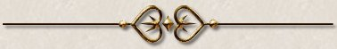
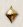
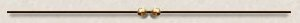

|

DESCENDANCE
DE
PIERRE CHORET ET ANGÉLIQUE TURCOT (Source:
Fonds numérisé Drouin) 
|
 MARIE-ANNE
est baptisée à Charlesbourg le 15 avril 1713. Ses parrains sont
Jean Turcot et Marie-Anne Pagé. Le 13 novembre 1730 elle
épouse, à Saint-Laurent, Joseph Bayard, fils de Jacques et de
Marie Valade.
Elle décède le 2 avril 1733 à Saint-Laurent. Il est à noter
qu'elle est veuve au moment de son décès. Quelques semaines
plus tard, le 28 mai, son fils Joseph, âgé de quinze mois,
décède. |
|

|
ÉLISABETH
est baptisée à Charlesbourg le 5
novembre 1714. Elle se marie une première fois, le 12
novembre 1731, à Saint-Laurent de Montréal avec François
Bayard, fils de Jacques et de Marie Valade. Les témoins
de l'épouse sont Ignace Choret et Michel Beaugis, ses oncles,
et Jean Choret, son frère.
Élisabeth se remarie dans la paroisse La Visitation de Marie,
à Sault-au-Récollet, le 22 avril 1754 à Joseph-Marie
Martineau, fils de Joseph et de Marie-Anne-Geneviève Boucher
dite Lamirande.
Elle décède subitement le 12 octobre 1798 à
Sault-au-Récollet. |
|
|
PIERRE
est baptisé à
Charlesbourg le 13
septembre 1716. Il se marie le 8 janvier 1742 à
Sault-au-Récollet avec Marie Lemay, fille d'Ignace et de
Marie-Anne Lecompte dite la Gimaudière. Leur contrat de
mariage est passé le 27 décembre 1741, devant le notaire
Dauré de Blanzy.
Le couple a sept enfants, lors du baptême de deux d'entre eux,
le curé Chambon, du Sault-au-Récollet, mentionne l'absence de
Pierre. La première annotation
en 1745 est "le père absent en guerre"
et la deuxième, en 1750, est "le père étant absent
dans les Pays d'en Haut".
Pierre décède le 2 octobre 1755 à Sault-au-Récollet. Sa veuve Marie Lemay épouse en 2ème
noces Charles Cadot le 9 février 1756 à Sault-au-Récollet.
Elle a d'autres enfants de cette deuxième union.
|
|
|
LOUISE
est baptisée à Montréal le 13
mars 1718. Ses parrains sont Louis Turcot et Marie-Renée
Duhau.
Elle se marie le 26 novembre 1737 à
Sault-au-Récollet à Barthelemy Chaslu dit Chanteloup, fils de
François et de Marie-Marthe Fortier. Louise décède le
25 décembre 1813 à Sault-au-Récollet.
|
|
|
JOSEPH
est baptisée à Montréal le 26 septembre 1719. Ses parrains
sont François Poirier et Marie-Joseph Fayer.
Il se marie le 8 janvier 1742 à
Sault-au-Récollet avec Marie-Anne Lemay, fille d'Ignace et de
Marie-Anne Lecompte dite la Gimaudière. Il décède
le 29 août 1792 à Sault-au-Récollet.
|
C'est de
Joseph que nous descendons.
Pour nous, il est la quatrième génération de
Choret en
Nouvelle-France.
Visitez son site, vous y
accédez en cliquant
sur ce lien "les 14 générations". |
|
|
|
| JACQUES
est baptisé le 23 juillet 1721 à Saint-Laurent de Montréal, et y
est inhumé le 15 décembre de la même année. |
|
|
MARIE-JOSEPH
est baptisée le 10 mars 1723 à Saint-Laurent. Ses parrains
sont Ignace Lemay et Marie Patenote, femme de Charles Rose,
tante de l'enfant.
Elle se marie
Sault-au-Récollet le 24 octobre 1740 à Joseph Dagenais, fils de
Joseph et d'Anne Lemay. Joseph, né en 1718, décède le
12 octobre 1747. Marie-Joseph se remarie avec Joseph
Chartran, fils de Jean-Charles et de Madeleine Barbeau dite
Potvin, le 14 avril 1749. |
|
|
CHARLOTTE
est baptisée le 19 juillet 1725 à Montréal. Ses parrains sont
Michel Baugis et Marieanne Choret.
Elle se
marie trois fois au Sault-au-Récollet et y décède le 6 février 1776.
Son premier mariage a lieu le 8 janvier 1742 avec Joseph Giroux,
fils de Nicolas et de Marguerite Blondeau. Le témoin de
l'épouse est son oncle Ignace Choret. Le 6 juin 1746, Charlotte épouse Guillaume Valade, fils de Guillaume
et de Marie-Joseph Deguire. Le 5 août 1765, elle
épouse Pierre Chartran, fils de Jean-Charles et de Madeleine
Barbeau dite Potvin. |
|
|
| MICHEL
est baptisé le 8 mars 1727 à Montréal. |
|
|
| PAUL-MARIE
est baptisé à le 29 juin 1728 à Montréal, et est inhumé le 25 mars
1731 à Saint-Laurent. |
|
|
| ANGÉLIQUE
est baptisée le 16 avril 1730 à Saint-Laurent de Montréal, et y
est inhumée le 24
septembre 1730. |
|
|
| CHARLES
est baptisé le 25 mai 1733 à Saint-Laurent de Montréal, il y
est inhumé le 22 août
de la même année. |
|
|
| ANNE
est baptisée le 12 d.cembre 1734 à Saint-Laurent de Montréal, ses
parrains sont Jean Vanier et Charlotte Rose. Elle se marie
deux fois à Sault-au-Récollet. La première fois, le 17
juillet 1752, Anne épouse Joseph Valade, fils de Charles et de
Christine Bertrand. La deuxième fois, elle épouse Louis
Brunet, fils de François et d'Anne Thibault. Les témoins
de l'épouse sont deux oncles, Ignace Choret et Louis Turcot. Anne décède à Sault-au-Récollet le 17 février 1813. |
|
|
| JEAN-LOUIS
est baptisé le 16 juillet 1737 à Sault-au-Récollet et y est
inhumé le
1er août de la même année. |
|

|
Accueil
du site de Pierre Choret Son
enfance Sa
vie Sa
descendance
Les guerres intercoloniales
Montréal,
ville importante Se
nourrir en Nouvelle-France
zonecharette.ca
Le
parchemin des 14 générations Sources
Plan
du site
|